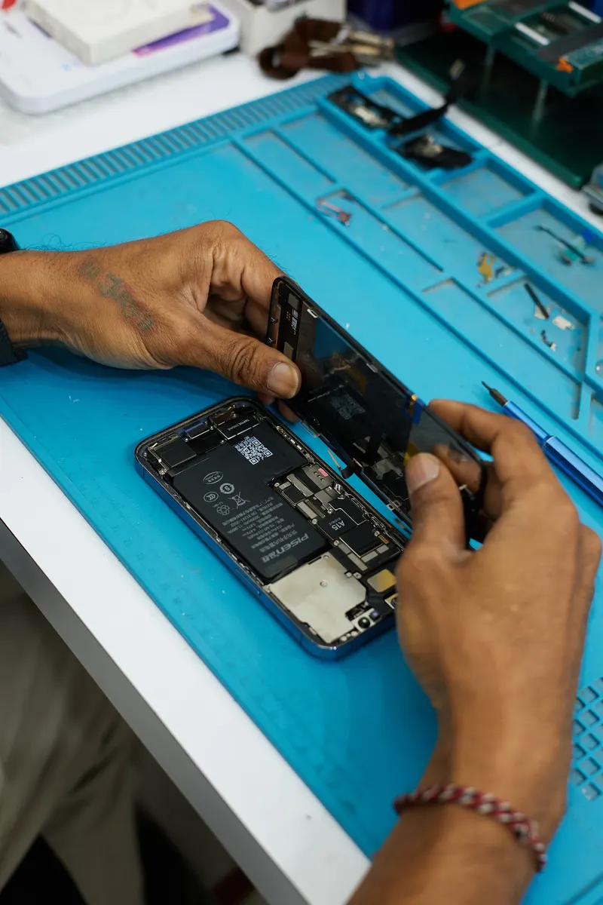
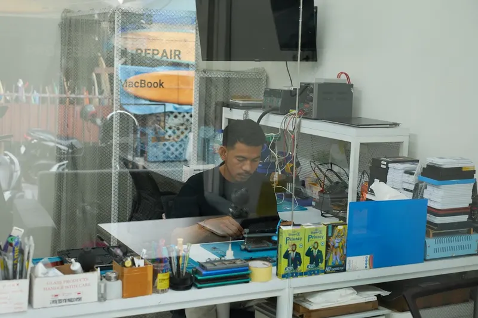
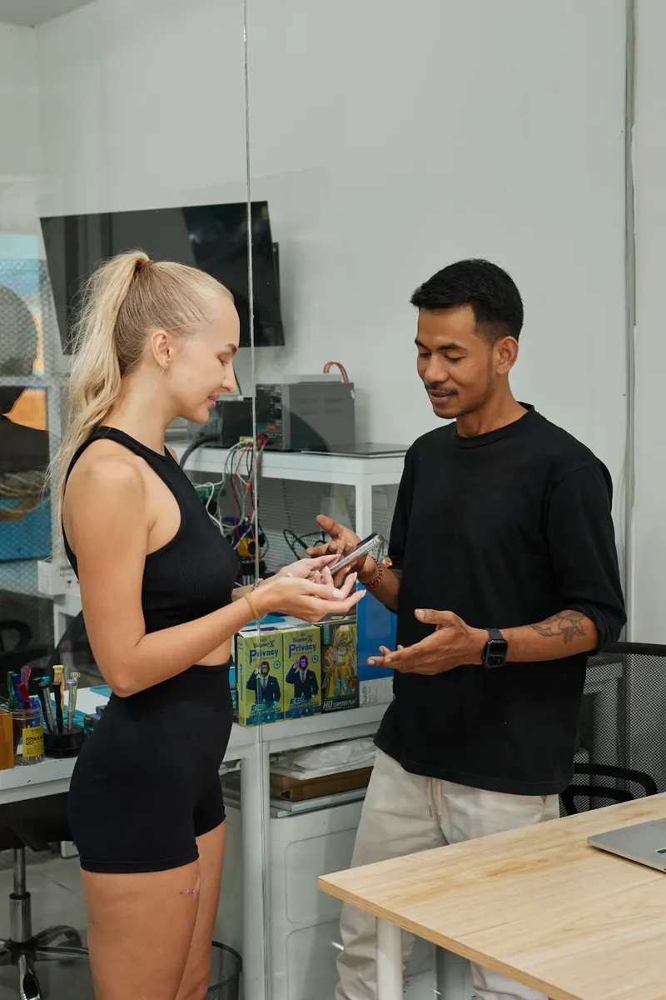
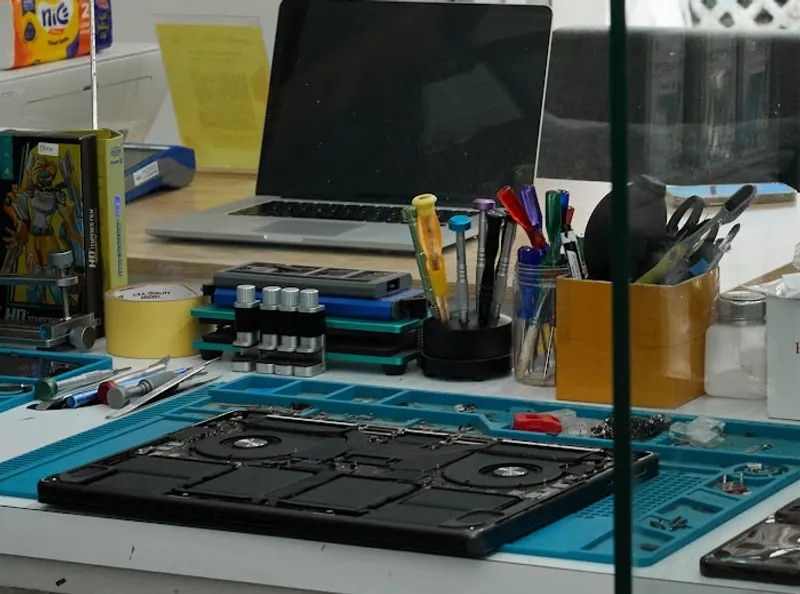
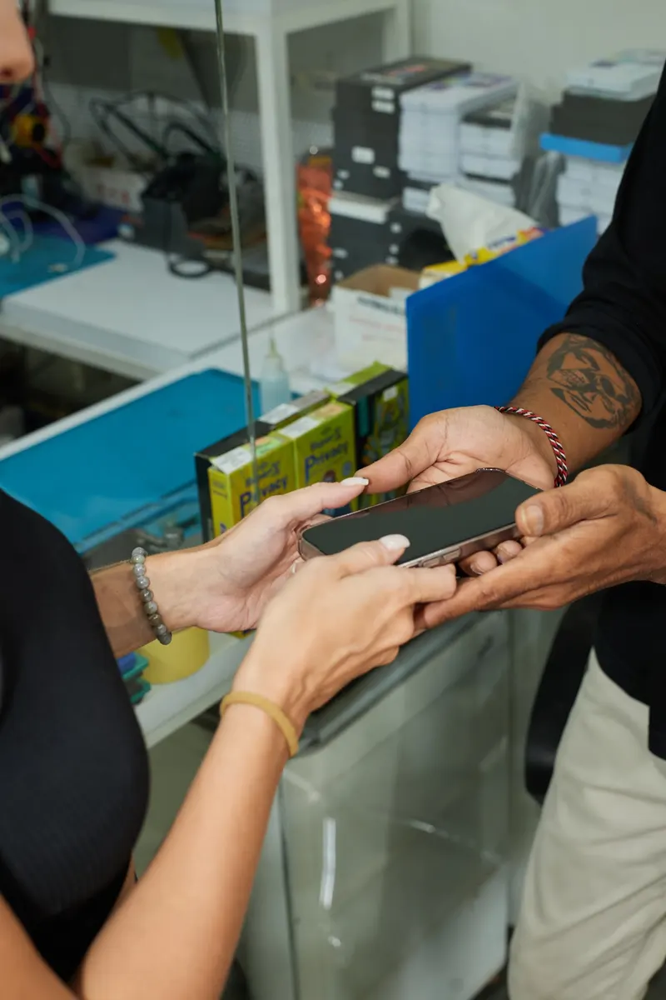

iPhone screen replacement
The most common repair in Canggu — a phone that met the pavement on the way back from the beach. We stock displays for current iPhone models and swap them the same day.
About 1 hour
Cracked screen, dead battery, or a phone that went for a swim? FixBox is an independent Apple repair workshop in Canggu — most repairs are finished within an hour.

iPhone and MacBook are what we handle most, but iPad, Apple Watch and AirPods are just as welcome. Diagnostics are free and we confirm the price before we start.
The most common repair in Canggu — a phone that met the pavement on the way back from the beach. We stock displays for current iPhone models and swap them the same day.
About 1 hour
If your phone dies by lunchtime or shuts down at 30%, the battery is worn out. A fresh battery brings back a full day of charge without buying a new phone.
About 45 minutes
Dropped in the pool, the ocean or caught in a rainstorm on the scooter. Bring it in switched off and as soon as you can — we clean the board before corrosion spreads.
Same-day diagnosis
Spilled coffee, beer or a cocktail into the keyboard. We open the machine, clean the logic board in an ultrasonic bath and replace whatever the liquid has killed.
Diagnosis within a day
Cracked panel, dead pixels, backlight gone or the infamous flexgate lines across the display. We replace the panel or the whole lid assembly depending on the damage.
1–2 days
A swollen battery lifts the trackpad and can crack the case — it is worth replacing before that happens. We fit a new cell and recalibrate the charge cycle.
Same day
When a device is written off elsewhere as unfixable, the fault is usually a single component on the board. We work under a microscope and repair at chip level.
Quoted after diagnosis
Not sure what is wrong? Bring the device in, we find the fault and tell you what it costs. If you decide not to repair it, you pay nothing.
Free of charge
Many repair points on Bali collect your device and send it to Denpasar, which costs you days of waiting. Everything we do happens on site in Canggu, in our own workshop, with proper equipment.

Message us before you come. If we know the model and the problem in advance, the part is ready when you walk in and you wait an hour instead of a day.

Send a WhatsApp message with your device model and the problem. We reply with the likely cost and confirm the part is in stock.

Open the map link and follow the pin — look for the round Apple-shaped sign over the street. We check the device with you and agree the final price.
Open in Google Maps
Screen and battery replacements are typically done within an hour. We test the device together before you leave.
A few of the reviews left by customers of our Canggu and Ubud workshops. The full, up-to-date list lives on our Google profile.
“Hands down the best place in Bali to replace your iPhone battery. As a digital nomad who depends on my phone 24/7, they had it working again in under an hour with a quality battery and a fair price.”
“My MacBook is finally back to normal! Fast repair, transparent pricing and really friendly service. Definitely a 5-star experience.”
“I was stressed because my iPhone battery kept dying, but these guys saved me. Battery replaced in about 45 minutes at a very reasonable price — no need to travel all the way to Denpasar.”
Look for the round Apple-shaped sign over the entrance — you cannot miss it.
Jl. Suweta No.39, Sambahan — same team, same repairs, open Monday to Saturday.